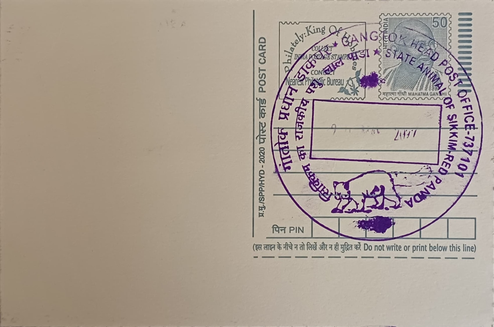

Red Panda-State Animal of Sikkim
रातो पान्डा - सिक्किमको राज्य पशु


The red panda (Ailurus fulgens) was first formally described in 1825 by the French zoologist Frédéric Cuvier, whose species epithet fulgens, meaning "shining" or "fire-coloured," refers to the animal's lustrous rust-red coat. In the Himalayan folk tradition of Sikkim and neighbouring hill regions, the creature is regarded as a gentle, almost magical presence said to guide lost travellers and children safely home, and it is popularly associated with prosperity and well-being. This cultural standing, combined with its physical distinctiveness, led to its formal adoption as the state animal of Sikkim, a recognition that has since anchored the species in the region's conservation and tourism identity.
Taxonomically, the red panda is the sole living member of the family Ailuridae, a lineage now understood to be only distantly related to the giant panda despite superficial similarities in diet and former classification alongside bears and raccoons. It is a mid-sized arboreal mammal, typically 50 to 65 centimetres in body length with a bushy ringed tail adding a further 28 to 59 centimetres, and is markedly bamboo-dependent despite a digestive system better suited to meat, a mismatch that forces it to spend most of its waking hours feeding. The IUCN lists the species as Endangered, with recent global population estimates placing mature individuals at under 10,000 and some assessments suggesting fewer than 2,500 breeding adults remain across its fragmented Himalayan and southwestern Chinese range.
Within Sikkim, red pandas have been recorded across all seven of the state's protected areas, with confirmed sightings and camera-trap evidence concentrated in the Khangchendzonga National Park and Biosphere Reserve, India's largest high-altitude protected landscape and a UNESCO World Heritage mixed site since 2016. Field surveys, including the first systematic camera-trap documentation from the Prek catchment within the reserve, have found the species restricted almost entirely to sub-alpine fir and bamboo-understorey habitat between roughly 3,000 and 3,850 metres elevation, underscoring how narrow and altitude-bound its viable range actually is. This specificity makes the red panda an unusually sensitive indicator of the health of Sikkim's upper temperate and sub-alpine forest belt.
A particular concern documented by researchers working in the Khangchendzonga landscape is the compounding pressure of livestock grazing and fuelwood extraction by mountain communities, which degrades the bamboo understorey the species depends on even where forest cover itself remains intact, alongside continuing risks from poaching for pelts and the illegal pet trade. Because the red panda is difficult to observe directly, being solitary, largely crepuscular, and well camouflaged in the forest canopy, much of what is known about its Sikkim population has come only in the last decade through systematic camera-trapping and community-reported sightings rather than long-term survey data, leaving significant gaps in baseline population figures for the state.
More recent conservation efforts have moved toward structured partnerships, including a programme between WWF India and corporate philanthropic funders to generate finer-scale habitat data and engage villages bordering the Khangchendzonga landscape in safeguarding red panda corridors across Sikkim and adjoining parts of West Bengal. The state forest department continues to treat the species as a flagship for broader Himalayan biodiversity protection, using its popularity in outreach material to build local support for stricter grazing controls and forest patrolling in sensitive sub-alpine zones. Gangtok, as Sikkim's administrative capital and the gateway through which most visitors and researchers travelling to these reserves pass, remains closely tied to the red panda's public identity as the animal most associated with the state's mountain wilderness.
| Date of Introduction | September 18, 2021 |
|---|---|
| Address | Senior Postmaster, |
| Gangtok HO, | |
| Gangtok (dt.), Sikkim - 737101. |